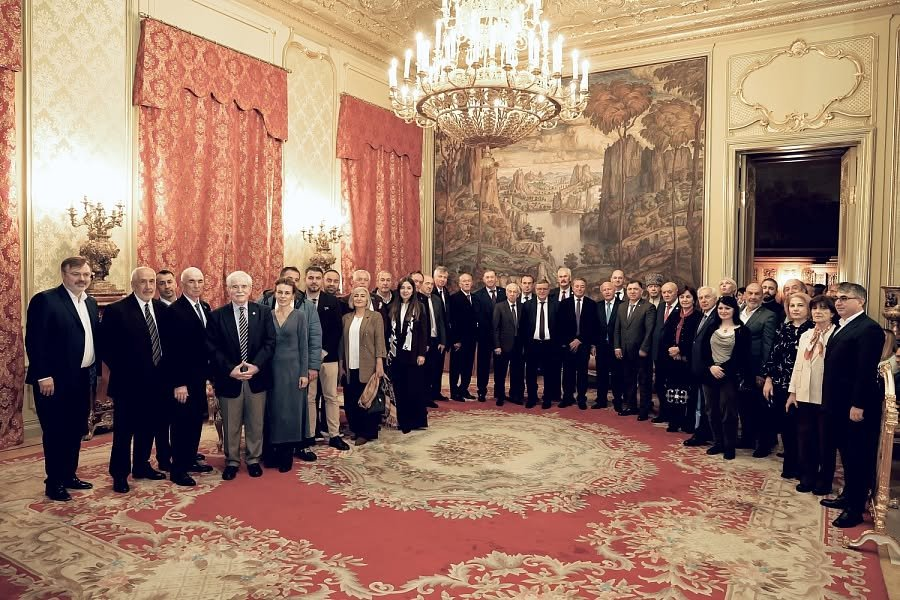

Critique · Memory politics
Hand in Hand With Whom?
On 28 October the Russian Foreign Ministry gathered officials and loyal Circassian organisations to celebrate "centuries hand in hand with Russia". What was left out of the room says more than anything said in it.

What happened
On 28 October 2026 the Russian Foreign Ministry hosted a round table in its Moscow mansion under the title "Through the centuries hand in hand with Russia, earning honour and glory". It was organised jointly by the ministry, Rossotrudnichestvo — the state agency for "humanitarian cooperation" abroad — and the International Circassian Association (MChA). The occasion, in the ministry's words, was the Year of Unity of the Peoples of Russia and the approaching "470th anniversary of Kabardino-Balkaria's entry into the Russian state".1
Who was in the room
- Opened by
- Mikhail Shvydkoy, the President's special representative for international cultural cooperation, reading a greeting from Foreign Minister Sergei Lavrov
- Greeting
- Igor Chaika, head of Rossotrudnichestvo
- Speakers
- Senators Alexei Pushkov and Arsen Kanokov (former head of Kabardino-Balkaria); Duma deputy S. Kovalev; S. Bedkin, deputy head of the Federal Agency for Nationalities Affairs; Kh. Sokhrokov, president of the MChA
- Diaspora
- The leadership of the Federation of Caucasian Associations (Turkey), the Circassian charity societies of Jordan and Syria, the "Circassia" heritage centre (Israel) and the federation of Circassian Khases of Europe (Germany)
- Guests
- Among others, the permanent representatives of the Republic of Adygea and of Kabardino-Balkaria to the President of Russia, B. Mugu and R. Bekishev
- Moderator
- V. Arakcheev, director of the Russian State Archive of Ancient Acts
According to the ministry's readout, speakers stressed "the contribution of the Circassians to the history of Russia" and the need to strengthen inter-ethnic unity "through a deeper understanding of the shared past". The Circassian participants, it says, "expressed gratitude to Russia" for its care for Circassian heritage and native languages. The discussion was "open and constructive, in a spirit of trust and mutual understanding".1
An anniversary invented in 1957
The date rests on a single event: in 1557 Kabardian princes sent an embassy to Moscow and concluded an alliance with Ivan IV, mainly against the Crimean Khanate. Kabarda remained a sovereign land, with its own princes and foreign policy, for two more centuries.
The formula of "voluntary entry into Russia" was fixed by Soviet historiography and staged as a state holiday in 1957 — complete with a monument in Nalchik called "Forever with Russia". Circassian historians have contested it ever since, and the 450th anniversary in 2007 was criticised inside the republic and met with protests across the diaspora.5, 6, 12–14 Kabarda did not "enter" Russia. It was conquered, in the wars of the late 18th and early 19th centuries.
Choosing the archive director as moderator was fitting. The round table was not a discussion of history; it was the archive certifying the official version of it.
A century of war, erased in one title
"Through the centuries hand in hand" leaves no room for the hundred years between 1763 and 1864, when the Russian Empire waged war on the Circassians. It ended on 21 May 1864 at Kbaada (today's Krasnaya Polyana), with the expulsion of most of the surviving population to the Ottoman Empire. Hundreds of thousands died — in the war, in the forced marches to the Black Sea coast, in the overcrowded boats and in the refugee camps of the Ottoman shore. That is why the overwhelming majority of Circassians live outside their homeland today, and why the "diaspora" organisations at this round table exist at all. In 2011 the Parliament of Georgia recognised these events as genocide.4
Neither the ministry's readout nor Lavrov's greeting mentions the war, the expulsion, the exile or the right of return. Lavrov writes that the history of the Circassians is "inseparably tied to the various stages of national statehood", and that Circassians distinguished themselves "in state service, culture, science and military affairs".2 That is true of individuals. Used as a summary of a people's history, it is a way of not saying what happened to that people.
"Russia is a multinational, multi-confessional power, a state-civilisation, where representatives of different peoples and religions have lived in peace and harmony since time immemorial."
— Sergei Lavrov's greeting to the round table, 28 October 20262
"Since time immemorial" and "in peace and harmony" — written about a people whose homeland on the Black Sea coast was emptied of its inhabitants by that same state's army.

Why the Foreign Ministry?
A domestic anniversary of a Russian republic does not need a foreign ministry. A diaspora does. The guest list explains the venue: federations from Turkey, Jordan, Syria, Israel and Germany, brought to Moscow by the ministry and by Rossotrudnichestvo, the agency whose job is to cultivate influence abroad. Lavrov's greeting names the goal outright: "the further development of the potential of public, people's diplomacy", and Russia's readiness to "share its invaluable experience with foreign partners".2
This is not new. The ministry has courted the MChA for years; in 2016 Lavrov publicly called for closer work with it,7 and in June 2026 the ministry gave its president an award "for contribution to international cooperation".3 The pattern is consistent: diaspora organisations are welcomed as partners on the condition that they speak the language of gratitude — and never the language of 1864. The medals go to the association’s president; the people in whose name he speaks have not had a single right restored — not the right of return, not recognition of what happened in 1864, not even a May 21 they can mark freely at home.
The timing matters too. Circassian civil society in the diaspora has spent two decades building the case for recognition, for May 21 as a day of mourning, and for the right of return. A group photo in a gilded hall of the Foreign Ministry, with the leaders of diaspora federations standing beside senators and ministry officials under a state-written slogan about "centuries hand in hand", is worth more to that state than any statement it could issue itself.
What the room did not hear
The participants thanked Russia for its "attention to preserving the historical and cultural heritage of the Circassian people" and its "support for native languages". Some of what was missing from that conversation:
- Commemoration. In Kabardino-Balkaria, May 21 mourning events have been restricted and participants of the memorial procession in Nalchik detained.8
- Prosecution of activists. In March 2026 a resident of Adygea was sentenced to 11 years over alleged involvement with the "Council of United Circassia".9 Diaspora organisations in Turkey have themselves called for an end to the criminal case against a Circassian activist in Russia.10
- Repatriation. Circassians abroad still have no recognised right of return. Even the authorities of Kabardino-Balkaria have sent Moscow proposals to change the repatriation rules.11 During the war in Syria, only a small fraction of the Syrian Circassians who asked to come home were able to resettle.
- Language. Since 2018 the study of native languages in Russian schools has been made voluntary, a change Circassian and other activists warned would accelerate their decline. "Support for native languages" is a strange thing to be grateful for under that law.


Unity that requires forgetting
The Year of Unity of the Peoples of Russia could have been an occasion for an honest conversation: about a conquest that is still called a "voluntary union", about a genocide that is still unnamed, about a people still mostly abroad. Instead, unity was defined as agreement with the state's version of history, and Circassian organisations were invited to endorse it.
We do not doubt that many in that room care about Circassian culture and language. But no one can speak for Circassians about a "shared past" while that past cannot be named in Nalchik or Maykop without risk. Real partnership would start elsewhere:
- acknowledgement of the war of 1763–1864 and the expulsion of 1864 for what they were;
- a free and safe May 21 in the homeland, without bans or detentions;
- a real, simple path of return for the descendants of the exiles;
- an end to the prosecution of Circassian activists;
- native-language education as a right, not an option.
Until then, "hand in hand with Russia" will describe the hands that were invited to the table — not the people who were not.
Eleştiri · Bellek siyaseti
Kiminle El Ele?
28 Ekim’de Rusya Dışişleri Bakanlığı, “yüzyıllar boyunca Rusya ile el ele” geçen bir tarihi kutlamak için yetkilileri ve sadık Çerkes kuruluşlarını bir araya getirdi. O salonun dışında bırakılanlar, içeride söylenen her şeyden daha çok şey anlatıyor.
Ne oldu?
28 Ekim 2026’da Rusya Dışişleri Bakanlığı, Moskova’daki konağında “Yüzyıllar boyunca Rusya ile el ele, onur ve şan kazanarak” başlıklı bir yuvarlak masa toplantısına ev sahipliği yaptı. Toplantıyı bakanlık, yurt dışında “insani işbirliğinden” sorumlu devlet ajansı Rossotrudniçestvo ve Uluslararası Çerkes Birliği (UÇB) birlikte düzenledi. Bakanlığın ifadesiyle vesile, Rusya Halklarının Birliği Yılı ve yaklaşan “Kabardey-Balkarya’nın Rus devletine katılışının 470. yıldönümü”ydü.1
Salonda kimler vardı?
- Açılış
- Devlet Başkanı’nın uluslararası kültürel işbirliğinden sorumlu özel temsilcisi Mihail Şvıdkoy; Dışişleri Bakanı Sergey Lavrov’un selamlama mesajını okudu
- Selamlama
- Rossotrudniçestvo Başkanı İgor Çayka
- Konuşmacılar
- Senatörler Aleksey Puşkov ve Arsen Kanokov (Kabardey-Balkarya’nın eski başkanı); Duma milletvekili S. Kovalev; Federal Milliyetler Ajansı başkan yardımcısı S. Bedkin; UÇB Başkanı H. Sohrokov
- Diaspora
- Kafkas Dernekleri Federasyonu (Türkiye), Ürdün ve Suriye Çerkes hayır dernekleri, “Çerkesya” miras merkezi (İsrail) ve Avrupa Çerkes Haseleri federasyonu (Almanya) yönetimleri
- Konuklar
- Diğerlerinin yanı sıra Adıgey Cumhuriyeti ve Kabardey-Balkarya’nın Rusya Devlet Başkanı nezdindeki daimi temsilcileri B. Mugu ve R. Bekişev
- Moderatör
- Rusya Devlet Eski Belgeler Arşivi müdürü V. Arakçeyev
Bakanlığın açıklamasına göre konuşmacılar “Çerkeslerin Rusya tarihine katkısını” ve etnik gruplar arası birliğin “ortak geçmişin daha derin kavranması yoluyla” güçlendirilmesi gerektiğini vurguladı. Açıklamaya göre Çerkes katılımcılar, Çerkes mirasına ve ana dillere gösterdiği özen için “Rusya’ya şükranlarını ifade etti”. Görüşmeler “açık ve yapıcı, güven ve karşılıklı anlayış ruhu içinde” geçti.1
1957’de icat edilen bir yıldönümü
Tarih tek bir olaya dayanıyor: 1557’de Kabardey prensleri Moskova’ya bir elçilik heyeti gönderdi ve IV. İvan ile, esas olarak Kırım Hanlığı’na karşı bir ittifak kurdu. Kabarda, kendi prensleri ve dış politikasıyla iki yüzyıl daha egemen bir ülke olarak kaldı.
“Rusya’ya gönüllü katılım” formülünü Sovyet tarih yazımı sabitledi ve 1957’de bir devlet bayramı olarak sahneledi — Nalçik’te “Sonsuza dek Rusya ile” adlı bir anıtla birlikte. Çerkes tarihçiler o günden beri bu formüle itiraz ediyor; 2007’deki 450. yıl kutlamaları cumhuriyetin içinde eleştirildi ve diasporada protestolarla karşılandı.5, 6, 12–14 Kabarda Rusya’ya “katılmadı”. XVIII. yüzyıl sonu ile XIX. yüzyıl başındaki savaşlarla fethedildi.
Arşiv müdürünün moderatör seçilmesi yerindeydi. Yuvarlak masa bir tarih tartışması değildi; arşivin, tarihin resmî versiyonunu onaylamasıydı.
Tek bir başlıkla silinen bir asırlık savaş
“Yüzyıllar boyunca el ele” ifadesi, Rus İmparatorluğu’nun Çerkeslere karşı savaş yürüttüğü 1763–1864 arasındaki yüz yıla yer bırakmıyor. Savaş 21 Mayıs 1864’te Kbaada’da (bugünkü Krasnaya Polyana) sona erdi ve hayatta kalan nüfusun çoğu Osmanlı İmparatorluğu’na sürüldü. Yüz binlerce insan öldü — savaşta, Karadeniz kıyısına yapılan zorunlu yürüyüşlerde, aşırı kalabalık teknelerde ve Osmanlı kıyısındaki mülteci kamplarında. Bugün Çerkeslerin ezici çoğunluğunun anavatanları dışında yaşamasının ve bu yuvarlak masadaki “diaspora” kuruluşlarının var olmasının nedeni budur. 2011’de Gürcistan Parlamentosu bu olayları soykırım olarak tanıdı.4
Ne bakanlığın açıklaması ne de Lavrov’un mesajı savaştan, sürgünden, gurbetten ya da geri dönüş hakkından söz ediyor. Lavrov, Çerkeslerin tarihinin “ulusal devletçiliğin çeşitli aşamalarıyla ayrılmaz biçimde bağlantılı” olduğunu ve Çerkeslerin “devlet hizmetinde, kültürde, bilimde ve askerlikte” öne çıktığını yazıyor.2 Bu, bireyler için doğru. Bir halkın tarihinin özeti olarak kullanıldığında ise o halkın başına geleni söylememenin bir yoludur.
“Rusya çok uluslu, çok dinli bir güç, bir devlet-uygarlıktır; farklı halkların ve dinlerin temsilcileri burada ezelden beri barış ve uyum içinde yaşamaktadır.”
— Sergey Lavrov’un yuvarlak masaya selamlama mesajı, 28 Ekim 20262
“Ezelden beri” ve “barış ve uyum içinde” — Karadeniz kıyısındaki yurdu aynı devletin ordusu tarafından sakinlerinden boşaltılmış bir halk hakkında yazılmış sözler.
Neden Dışişleri Bakanlığı?
Bir Rus cumhuriyetinin iç yıldönümü bir dışişleri bakanlığına ihtiyaç duymaz. Bir diaspora duyar. Konuk listesi mekânı açıklıyor: Türkiye, Ürdün, Suriye, İsrail ve Almanya’dan federasyonlar, bakanlık ve işi yurt dışında nüfuz geliştirmek olan Rossotrudniçestvo tarafından Moskova’ya getirildi. Lavrov’un mesajı hedefi açıkça söylüyor: “kamu diplomasisinin, halk diplomasisinin potansiyelinin daha da geliştirilmesi” ve Rusya’nın “paha biçilmez deneyimini yabancı ortaklarla paylaşmaya” hazır olması.2
Bu yeni değil. Bakanlık yıllardır UÇB’ye kur yapıyor; 2016’da Lavrov onunla daha yakın çalışılması çağrısında bulundu,7 Haziran 2026’da ise bakanlık UÇB başkanına “uluslararası işbirliğine katkı” ödülü verdi.3 Örüntü tutarlı: diaspora kuruluşları, şükran dilini konuşmaları — ve asla 1864’ün dilini konuşmamaları — koşuluyla ortak olarak ağırlanıyor. Madalyalar birliğin başkanına gidiyor; onun adına konuştuğu halkın ise tek bir hakkı bile iade edilmiş değil — ne geri dönüş hakkı, ne 1864’te yaşananların tanınması, ne de anavatanda özgürce anılabilen bir 21 Mayıs.
Zamanlama da önemli. Diasporadaki Çerkes sivil toplumu yirmi yıldır tanınma, 21 Mayıs’ın yas günü olması ve geri dönüş hakkı için çalışıyor. Diaspora federasyonlarının liderlerinin, devletin yazdığı “yüzyıllar boyunca el ele” sloganı altında senatörler ve bakanlık yetkilileriyle yan yana durduğu, Dışişleri Bakanlığı’nın yaldızlı bir salonunda çekilmiş bir toplu fotoğraf, o devlet için kendi yapabileceği her açıklamadan daha değerlidir.
Salonda duyulmayanlar
Katılımcılar Rusya’ya “Çerkes halkının tarihî ve kültürel mirasının korunmasına gösterdiği ilgi” ve “ana dillere desteği” için teşekkür etti. Bu konuşmada eksik olanlardan bazıları:
- Anma. Kabardey-Balkarya’da 21 Mayıs yas etkinlikleri kısıtlandı ve Nalçik’teki anma yürüyüşünün katılımcıları gözaltına alındı.8
- Aktivistlerin yargılanması. Mart 2026’da Adıgey’de yaşayan bir kişi, “Birleşik Çerkesya Konseyi” ile iddia edilen bağlantısı nedeniyle 11 yıl hapse mahkûm edildi.9 Türkiye’deki diaspora kuruluşları da Rusya’daki bir Çerkes aktiviste yönelik ceza davasının sona erdirilmesi çağrısında bulundu.10
- Geri dönüş. Yurt dışındaki Çerkeslerin hâlâ tanınmış bir geri dönüş hakkı yok. Kabardey-Balkarya yetkilileri bile Moskova’ya geri dönüş kurallarının değiştirilmesi için öneriler gönderdi.11 Suriye’deki savaş sırasında anavatana dönmek isteyen Suriyeli Çerkeslerin yalnızca küçük bir kısmı yerleşebildi.
- Dil. 2018’den beri Rusya okullarında ana dil eğitimi isteğe bağlı hâle getirildi; Çerkes ve diğer aktivistler bunun dillerin gerilemesini hızlandıracağı uyarısında bulunmuştu. Bu yasa yürürlükteyken “ana dillere destek” için şükran duymak tuhaf bir şey.
Unutmayı şart koşan birlik
Rusya Halklarının Birliği Yılı dürüst bir konuşma için fırsat olabilirdi: hâlâ “gönüllü birleşme” denen bir fetih hakkında, hâlâ adı konmamış bir soykırım hakkında, hâlâ çoğunluğu yurt dışında yaşayan bir halk hakkında. Bunun yerine birlik, devletin tarih versiyonuyla mutabakat olarak tanımlandı ve Çerkes kuruluşları onu onaylamaya davet edildi.
O salondaki pek çok kişinin Çerkes kültürünü ve dilini önemsediğinden şüphe etmiyoruz. Ancak bu geçmiş Nalçik’te ya da Maykop’ta risk almadan adlandırılamadığı sürece hiç kimse Çerkesler adına bir “ortak geçmiş”ten söz edemez. Gerçek ortaklık başka bir yerden başlar:
- 1763–1864 savaşının ve 1864 sürgününün ne olduysa o olarak kabul edilmesi;
- anavatanda yasaksız ve gözaltısız, özgür ve güvenli bir 21 Mayıs;
- sürgünlerin torunları için gerçek ve basit bir geri dönüş yolu;
- Çerkes aktivistlerin yargılanmasına son verilmesi;
- ana dilde eğitimin bir seçenek değil, bir hak olması.
O güne dek “Rusya ile el ele”, masaya davet edilen elleri anlatacak — davet edilmeyen halkı değil.
Критикэ · Гукъэкӏыж политикэ
Хэт и Ӏэпэр Яубыдар?
Жэпуэгъуэм и 28-м Урысейм и Ӏэщӏыб Ӏуэхухэмкӏэ министерствэм къызэхуишэсащ лӏыкӏуэхэмрэ абы и лъэныкъуэ адыгэ зэгухьэныгъэхэмрэ «лӏэщӏыгъуэ куэдкӏэ Урысейм Ӏэпэр иубыдауэ» дыщыпсэуащ жаӏэу гуфӏэну.
Мыбдеж тхыгъэм и кӏэщӏу къэӏуэтэныгъэр щыӏэщ. Тхыгъэ псор нэгъуэщӏ бзэхэмкӏэ щыӏэщ.
КӀэщӀу
Министерствэм, Россотрудничествэм, Дунейпсо Адыгэ Хасэм зэхашат зэхуэсыр. Абы хэтащ Урысейм и чиновникхэр, Тыркум, Иорданием, Сирием, Израилым, Германием къикӏа хасэхэм я унафэщӏхэр. Ар зытеухуар 1557 гъэм Къэбэрдейр Урысейм «и фӏэфӏкӏэ» гуэхьауэ зэрыжаӏэ хъыбарым и гъэ 470-рщ.
Ди тхыгъэм къыщыдгъэлъагъуэ: а хъыбарыр 1957 гъэм Совет историографием къигупсысащ; Къэбэрдейр «гуэхьакъым» — зауэкӏэ къаубыдащ. 1763–1864 гъэхэм Урысей империем адыгэхэм зауэ яригъэкӏуэкӏащ, 1864 гъэм накъыгъэм и 21-м ар иухащ, адыгэ лъэпкъым и нэхъыбэр Осман империем ирахуащ. А зауэм, а ирахуэныгъэм, хэкум къэгъэзэжыным зэхуэсым зы псалъэ щыжамыӏащ.
Зэхуэсым жамыӏахэр: Налшык накъыгъэм и 21-м щекӏуэкӏ гукъэкӏыж Ӏуэхухэр зэрызэпагъэур, адыгэ активистхэр зэрагъэтӏысыр, хэкум къэзыгъэзэжыну хуейхэм гъуэгу зэрамыӏэр, анэдэлъхубзэр еджапӏэхэм зэрыщытекӏыр. Пэжу зэныбжьэгъуныгъэр а Ӏуэхухэр къыщыхуагъэфащэкӏэрщ къыщежьэнур.
Критика · Политика памяти
Рука об руку — с кем?
28 октября МИД России собрал чиновников и лояльные черкесские организации, чтобы отметить «века рука об руку с Россией». То, что осталось за дверями зала, говорит больше, чем всё, что было сказано внутри.
Что произошло
28 октября 2026 года МИД России провёл в своём московском особняке круглый стол под названием «Сквозь века рука об руку с Россией, снискав почёт и славу». Его организовали совместно министерство, Россотрудничество — государственное агентство по «гуманитарному сотрудничеству» за рубежом — и Международная черкесская ассоциация (МЧА). Поводом, по словам министерства, стали Год единства народов России и приближение «470-й годовщины вхождения Кабардино-Балкарии в состав Российского государства».1
Кто был в зале
- Открыл
- Михаил Швыдкой, специальный представитель Президента по международному культурному сотрудничеству, зачитавший приветствие министра иностранных дел Сергея Лаврова
- Приветствие
- Игорь Чайка, руководитель Россотрудничества
- Выступили
- Сенаторы Алексей Пушков и Арсен Каноков (бывший глава Кабардино-Балкарии); депутат Госдумы С. Ковалёв; С. Бедкин, заместитель руководителя Федерального агентства по делам национальностей; Х. Сохроков, президент МЧА
- Диаспора
- Руководство Федерации кавказских обществ (Турция), черкесских благотворительных обществ Иордании и Сирии, центра наследия «Черкесия» (Израиль) и федерации черкесских хасэ Европы (Германия)
- Гости
- В том числе постоянные представители Республики Адыгея и Кабардино-Балкарской Республики при Президенте Российской Федерации Б. А. Мугу и Р. Х. Бекишев
- Модератор
- В. Аракчеев, директор Российского государственного архива древних актов
Согласно сообщению министерства, в выступлениях «акцентировался вклад черкесов в историю России» и подчёркивалась важность укрепления межнационального единства «через более глубокое осмысление общего прошлого». Представители черкесской общественности, говорится там, «выражали признательность России» за заботу о черкесском наследии и родных языках. «Дискуссия носила открытый и конструктивный характер в духе доверия и взаимопонимания».1
Юбилей, придуманный в 1957 году
Дата опирается на одно-единственное событие: в 1557 году кабардинские князья направили в Москву посольство и заключили с Иваном IV союз, прежде всего против Крымского ханства. Кабарда ещё два столетия оставалась суверенной землёй со своими князьями и собственной внешней политикой.
Формулу «добровольного вхождения в Россию» закрепила советская историография и превратила в государственный праздник в 1957 году — вместе с памятником в Нальчике под названием «Навеки с Россией». Черкесские историки оспаривают её с тех пор, а 450-летие в 2007 году критиковали в самой республике и встретили протестами по всей диаспоре.5, 6, 12–14 Кабарда не «вошла» в Россию. Её завоевали в войнах конца XVIII — начала XIX века.
Выбор директора архива в качестве модератора был очень к месту. Круглый стол не был обсуждением истории — это архив заверял её официальную версию.
Век войны, стёртый одним названием
«Сквозь века рука об руку» не оставляет места для ста лет — с 1763 по 1864 год, — в течение которых Российская империя вела войну с черкесами. Она закончилась 21 мая 1864 года в Кбааде (нынешняя Красная Поляна) изгнанием большей части уцелевшего населения в Османскую империю. Сотни тысяч людей погибли — на войне, в вынужденных переходах к черноморскому побережью, в переполненных лодках и в лагерях беженцев на османском берегу. Именно поэтому подавляющее большинство черкесов сегодня живёт за пределами родины, и именно поэтому вообще существуют «диаспорные» организации, сидевшие за этим столом. В 2011 году Парламент Грузии признал эти события геноцидом.4
Ни сообщение министерства, ни приветствие Лаврова не упоминают ни войну, ни изгнание, ни изгнанничество, ни право на возвращение. Лавров пишет, что история черкесов «неразрывно связана с различными этапами отечественной государственности» и что многие черкесы «достойно проявили себя на государственной стезе, в области культуры и науки, в ратных делах».2 Об отдельных людях это правда. Но как итог истории целого народа это способ не говорить о том, что с этим народом произошло.
«Россия – многонациональная и многоконфессиональная держава, государство-цивилизация, где в мире и согласии испокон веков живут представители различных народов и религий».
— Приветствие Сергея Лаврова участникам круглого стола, 28 октября 2026 года2
«Испокон веков» и «в мире и согласии» — это написано о народе, чья родина на черноморском побережье была опустошена армией того же самого государства.
Почему МИД?
Внутреннему юбилею российской республики министерство иностранных дел не нужно. Диаспоре — нужно. Список гостей объясняет выбор площадки: федерации из Турции, Иордании, Сирии, Израиля и Германии, которых привезли в Москву министерство и Россотрудничество — агентство, чья задача состоит в наращивании влияния за рубежом. Приветствие Лаврова прямо называет цель — «дальнейшему раскрытию потенциала общественной, народной дипломатии» — и заявляет: «Готовы делиться нашим бесценным опытом с зарубежными партнёрами».2
Это не ново. Министерство годами обхаживает МЧА: в 2016 году Лавров публично призвал теснее с ней работать,7 а в июне 2026 года министерство наградило её президента «за вклад в международное сотрудничество».3 Схема неизменна: диаспорные организации принимают как партнёров при условии, что они говорят на языке благодарности — и никогда на языке 1864 года. Награды получает президент ассоциации, а народу, от имени которого он говорит, не вернули ни одного права — ни права на возвращение, ни признания того, что произошло в 1864 году, ни даже возможности свободно отмечать 21 мая на родине.
Важен и момент. Черкесское гражданское общество в диаспоре два десятилетия добивается признания, превращения 21 мая в день траура и права на возвращение. Групповое фото в позолоченном зале МИД, где лидеры диаспорных федераций стоят рядом с сенаторами и чиновниками министерства под написанным государством лозунгом о «веках рука об руку», стоит для этого государства больше любого заявления, которое оно могло бы сделать само.
Чего в зале не услышали
Участники благодарили Россию за «внимание к сохранению историко-культурного наследия черкесского народа» и за «поддержку родных языков». Вот кое-что из того, чего в этом разговоре не было:
- Память. В Кабардино-Балкарии траурные мероприятия 21 мая ограничивали, а участников траурного шествия в Нальчике задерживали.8
- Преследование активистов. В марте 2026 года жителя Адыгеи приговорили к 11 годам по обвинению в причастности к «Совету объединённой Черкесии».9 Диаспорные организации в Турции сами призывали прекратить уголовное дело против черкесской активистки в России.10
- Репатриация. У черкесов за рубежом по-прежнему нет признанного права на возвращение. Даже власти Кабардино-Балкарии направляли в Москву предложения изменить правила репатриации.11 Во время войны в Сирии переселиться смогла лишь малая часть сирийских черкесов, просивших вернуться на родину.
- Язык. С 2018 года изучение родных языков в российских школах стало добровольным — изменение, которое, как предупреждали черкесские и другие активисты, ускорит их упадок. При таком законе благодарить за «поддержку родных языков» странно.
Единство, которое требует забвения
Год единства народов России мог бы стать поводом для честного разговора — о завоевании, которое до сих пор называют «добровольным союзом», о геноциде, который до сих пор не назван, о народе, который до сих пор в основном живёт за рубежом. Вместо этого единство определили как согласие с государственной версией истории, а черкесские организации пригласили её одобрить.
Мы не сомневаемся, что многим в этом зале дороги черкесская культура и язык. Но никто не может говорить от имени черкесов об «общем прошлом», пока это прошлое нельзя без риска назвать по имени в Нальчике или Майкопе. Настоящее партнёрство начиналось бы иначе:
- с признания войны 1763–1864 годов и изгнания 1864 года тем, чем они были;
- со свободного и безопасного 21 мая на родине — без запретов и задержаний;
- с реального и простого пути возвращения для потомков изгнанников;
- с прекращения преследования черкесских активистов;
- с обучения на родном языке как права, а не опции.
До тех пор «рука об руку с Россией» будет описывать руки, которые пригласили к столу, — а не народ, который не пригласили.
Kritik · Erinnerungspolitik
Hand in Hand – mit wem?
Am 28. Oktober versammelte das russische Außenministerium Funktionäre und loyale tscherkessische Organisationen, um „Jahrhunderte Hand in Hand mit Russland“ zu feiern. Was draußen blieb, sagt mehr als alles, was drinnen gesagt wurde.
Was geschah
Am 28. Oktober 2026 lud das russische Außenministerium in seine Moskauer Villa zu einem Runden Tisch unter dem Titel „Durch die Jahrhunderte Hand in Hand mit Russland, Ehre und Ruhm erwerbend“. Veranstalter waren gemeinsam das Ministerium, Rossotrudnitschestwo – die staatliche Agentur für „humanitäre Zusammenarbeit“ im Ausland – und die Internationale Tscherkessische Assoziation (ITA). Anlass waren nach den Worten des Ministeriums das Jahr der Einheit der Völker Russlands und der bevorstehende „470. Jahrestag des Eintritts Kabardino-Balkariens in den russischen Staat“.1
Wer im Saal war
- Eröffnung
- Michail Schwydkoi, Sonderbeauftragter des Präsidenten für internationale kulturelle Zusammenarbeit; er verlas ein Grußwort von Außenminister Sergei Lawrow
- Grußwort
- Igor Tschaika, Leiter von Rossotrudnitschestwo
- Redner
- Die Senatoren Alexei Puschkow und Arsen Kanokow (ehemaliges Oberhaupt Kabardino-Balkariens); Duma-Abgeordneter S. Kowaljow; S. Bedkin, stellvertretender Leiter der Föderalen Agentur für Nationalitätenfragen; Ch. Sochrokow, Präsident der ITA
- Diaspora
- Die Führung der Föderation Kaukasischer Vereine (Türkei), der tscherkessischen Wohltätigkeitsvereine Jordaniens und Syriens, des Kulturerbezentrums „Tscherkessien“ (Israel) und der Föderation der tscherkessischen Chasse Europas (Deutschland)
- Gäste
- Unter anderem die Ständigen Vertreter der Republik Adygeja und Kabardino-Balkariens beim Präsidenten Russlands, B. Mugu und R. Bekischew
- Moderation
- W. Araktschejew, Direktor des Russischen Staatsarchivs Alter Akten
Laut der Mitteilung des Ministeriums betonten die Redner „den Beitrag der Tscherkessen zur Geschichte Russlands“ und die Notwendigkeit, die interethnische Einheit „durch ein tieferes Verständnis der gemeinsamen Vergangenheit“ zu stärken. Die tscherkessischen Teilnehmer hätten „Russland ihren Dank ausgesprochen“ für seine Fürsorge um das tscherkessische Erbe und die Muttersprachen. Die Diskussion sei „offen und konstruktiv, im Geiste des Vertrauens und gegenseitigen Verständnisses“ verlaufen.1
Ein 1957 erfundenes Jubiläum
Das Datum beruht auf einem einzigen Ereignis: 1557 schickten kabardinische Fürsten eine Gesandtschaft nach Moskau und schlossen mit Iwan IV. ein Bündnis, vor allem gegen das Krim-Khanat. Kabarda blieb noch zwei Jahrhunderte ein souveränes Land mit eigenen Fürsten und eigener Außenpolitik.
Die Formel vom „freiwilligen Eintritt in Russland“ hat die sowjetische Geschichtsschreibung festgeschrieben und 1957 als Staatsfeiertag inszeniert – samt einem Denkmal in Naltschik namens „Für immer mit Russland“. Tscherkessische Historiker bestreiten sie seither, und der 450. Jahrestag 2007 wurde in der Republik selbst kritisiert und stieß in der ganzen Diaspora auf Proteste.5, 6, 12–14 Kabarda ist nicht in Russland „eingetreten“. Es wurde erobert, in den Kriegen des späten 18. und frühen 19. Jahrhunderts.
Dass ausgerechnet der Archivdirektor moderierte, passte. Der Runde Tisch war keine Diskussion über Geschichte; es war das Archiv, das deren offizielle Fassung beglaubigte.
Ein Jahrhundert Krieg, ausgelöscht in einem Titel
„Durch die Jahrhunderte Hand in Hand“ lässt keinen Platz für die hundert Jahre zwischen 1763 und 1864, in denen das Russische Reich Krieg gegen die Tscherkessen führte. Er endete am 21. Mai 1864 in Kbaada (heute Krasnaja Poljana) mit der Vertreibung des größten Teils der überlebenden Bevölkerung ins Osmanische Reich. Hunderttausende starben – im Krieg, auf den erzwungenen Märschen zur Schwarzmeerküste, in den überfüllten Booten und in den Flüchtlingslagern an der osmanischen Küste. Darum lebt heute die überwältigende Mehrheit der Tscherkessen außerhalb ihrer Heimat, und darum gibt es die „Diaspora“-Organisationen an diesem Runden Tisch überhaupt. 2011 erkannte das georgische Parlament diese Ereignisse als Völkermord an.4
Weder die Mitteilung des Ministeriums noch Lawrows Grußwort erwähnen den Krieg, die Vertreibung, das Exil oder das Recht auf Rückkehr. Lawrow schreibt, die Geschichte der Tscherkessen sei „untrennbar mit den verschiedenen Etappen der vaterländischen Staatlichkeit verbunden“ und Tscherkessen hätten sich „im Staatsdienst, in Kultur, Wissenschaft und Militärwesen“ hervorgetan.2 Für Einzelne stimmt das. Als Zusammenfassung der Geschichte eines Volkes ist es eine Art, nicht zu sagen, was diesem Volk widerfahren ist.
„Russland ist eine multinationale, multikonfessionelle Macht, ein Staat-Zivilisation, in dem seit jeher Vertreter verschiedener Völker und Religionen in Frieden und Eintracht leben.“
— Grußwort Sergei Lawrows an den Runden Tisch, 28. Oktober 20262
„Seit jeher“ und „in Frieden und Eintracht“ – geschrieben über ein Volk, dessen Heimat an der Schwarzmeerküste von der Armee eben dieses Staates entvölkert wurde.
Warum das Außenministerium?
Ein innenpolitisches Jubiläum einer russischen Republik braucht kein Außenministerium. Eine Diaspora schon. Die Gästeliste erklärt den Ort: Föderationen aus der Türkei, Jordanien, Syrien, Israel und Deutschland, nach Moskau geholt vom Ministerium und von Rossotrudnitschestwo, der Agentur, deren Aufgabe es ist, Einfluss im Ausland aufzubauen. Lawrows Grußwort benennt das Ziel offen: „die weitere Entfaltung des Potenzials der öffentlichen, der Volksdiplomatie“ und Russlands Bereitschaft, „seine unschätzbare Erfahrung mit ausländischen Partnern zu teilen“.2
Das ist nicht neu. Das Ministerium umwirbt die ITA seit Jahren; 2016 rief Lawrow öffentlich zu einer engeren Zusammenarbeit mit ihr auf,7 und im Juni 2026 zeichnete das Ministerium ihren Präsidenten „für den Beitrag zur internationalen Zusammenarbeit“ aus.3 Das Muster ist beständig: Diaspora-Organisationen sind als Partner willkommen, sofern sie die Sprache der Dankbarkeit sprechen – und niemals die Sprache von 1864. Die Orden bekommt der Präsident der Assoziation; dem Volk, in dessen Namen er spricht, wurde kein einziges Recht zurückgegeben – weder das Recht auf Rückkehr noch die Anerkennung dessen, was 1864 geschah, nicht einmal ein 21. Mai, den es in der Heimat frei begehen kann.
Auch der Zeitpunkt zählt. Die tscherkessische Zivilgesellschaft in der Diaspora arbeitet seit zwei Jahrzehnten für Anerkennung, für den 21. Mai als Trauertag und für das Recht auf Rückkehr. Ein Gruppenfoto im vergoldeten Saal des Außenministeriums, auf dem die Vorsitzenden von Diaspora-Föderationen neben Senatoren und Ministerialbeamten stehen, unter einem vom Staat verfassten Slogan über „Jahrhunderte Hand in Hand“, ist diesem Staat mehr wert als jede Erklärung, die er selbst abgeben könnte.
Was im Saal nicht zu hören war
Die Teilnehmer dankten Russland für seine „Aufmerksamkeit für die Bewahrung des historischen und kulturellen Erbes des tscherkessischen Volkes“ und seine „Unterstützung der Muttersprachen“. Einiges, was in diesem Gespräch fehlte:
- Gedenken. In Kabardino-Balkarien wurden Trauerveranstaltungen zum 21. Mai eingeschränkt und Teilnehmer des Gedenkzugs in Naltschik festgenommen.8
- Verfolgung von Aktivisten. Im März 2026 wurde ein Einwohner Adygeas wegen angeblicher Beteiligung am „Rat des Vereinten Tscherkessien“ zu 11 Jahren Haft verurteilt.9 Diaspora-Organisationen in der Türkei forderten selbst die Einstellung des Strafverfahrens gegen eine tscherkessische Aktivistin in Russland.10
- Rückkehr. Tscherkessen im Ausland haben noch immer kein anerkanntes Rückkehrrecht. Selbst die Behörden Kabardino-Balkariens haben Moskau Vorschläge zur Änderung der Repatriierungsregeln geschickt.11 Während des Krieges in Syrien konnte sich nur ein kleiner Teil der syrischen Tscherkessen, die um Rückkehr baten, in der Heimat ansiedeln.
- Sprache. Seit 2018 ist der Unterricht in den Muttersprachen an russischen Schulen freiwillig – eine Änderung, vor der tscherkessische und andere Aktivisten warnten, weil sie den Niedergang dieser Sprachen beschleunige. Unter diesem Gesetz für „Unterstützung der Muttersprachen“ zu danken, ist seltsam.
Einheit, die Vergessen verlangt
Das Jahr der Einheit der Völker Russlands hätte Anlass für ein ehrliches Gespräch sein können: über eine Eroberung, die noch immer „freiwillige Vereinigung“ heißt, über einen Völkermord, der noch immer nicht benannt wird, über ein Volk, das noch immer größtenteils im Ausland lebt. Stattdessen wurde Einheit als Zustimmung zur staatlichen Version der Geschichte definiert, und tscherkessische Organisationen wurden eingeladen, sie zu bestätigen.
Wir bezweifeln nicht, dass vielen in diesem Saal die tscherkessische Kultur und Sprache am Herzen liegen. Aber niemand kann im Namen der Tscherkessen von einer „gemeinsamen Vergangenheit“ sprechen, solange diese Vergangenheit in Naltschik oder Maikop nicht ohne Risiko beim Namen genannt werden kann. Echte Partnerschaft würde anderswo beginnen:
- mit der Anerkennung des Krieges von 1763–1864 und der Vertreibung von 1864 als das, was sie waren;
- mit einem freien und sicheren 21. Mai in der Heimat, ohne Verbote und Festnahmen;
- mit einem echten, einfachen Rückkehrweg für die Nachkommen der Vertriebenen;
- mit einem Ende der Verfolgung tscherkessischer Aktivisten;
- mit muttersprachlicher Bildung als Recht, nicht als Option.
Bis dahin wird „Hand in Hand mit Russland“ die Hände beschreiben, die an den Tisch geladen wurden – nicht das Volk, das nicht geladen wurde.
نقد · سياسات الذاكرة
يدًا بيد… مع مَن؟
في 28 تشرين الأول/أكتوبر جمعت وزارة الخارجية الروسية مسؤولين ومنظمات شركسية موالية للاحتفال بـ«قرون يدًا بيد مع روسيا». وما تُرك خارج تلك القاعة يقول أكثر مما قيل داخلها.
ماذا حدث؟
في 28 تشرين الأول/أكتوبر 2026 استضافت وزارة الخارجية الروسية في قصرها بموسكو طاولة مستديرة بعنوان «عبر القرون يدًا بيد مع روسيا، نائلين الشرف والمجد». ونظّمتها الوزارة بالاشتراك مع «روسوترودنيتشيستفو» — الوكالة الحكومية المعنية بـ«التعاون الإنساني» في الخارج — والجمعية الشركسية العالمية. وكانت المناسبة، بحسب تعبير الوزارة، عام وحدة شعوب روسيا واقتراب «الذكرى السبعين بعد الأربعمئة لدخول قبردينو-بلقاريا في الدولة الروسية».1
مَن كان في القاعة؟
- الافتتاح
- ميخائيل شفيدكوي، الممثل الخاص للرئيس للتعاون الثقافي الدولي، الذي قرأ رسالة تحية من وزير الخارجية سيرغي لافروف
- تحية
- إيغور تشايكا، رئيس «روسوترودنيتشيستفو»
- المتحدثون
- عضوا مجلس الاتحاد أليكسي بوشكوف وأرسين كانوكوف (الرئيس السابق لقبردينو-بلقاريا)؛ نائب مجلس الدوما س. كوفاليوف؛ س. بيدكين، نائب رئيس الوكالة الاتحادية لشؤون القوميات؛ خ. سوخروكوف، رئيس الجمعية الشركسية العالمية
- الشتات
- قيادات اتحاد الجمعيات القوقازية (تركيا)، والجمعيات الخيرية الشركسية في الأردن وسوريا، ومركز التراث «شركيسيا» (إسرائيل)، واتحاد الخاسات الشركسية في أوروبا (ألمانيا)
- الضيوف
- من بينهم الممثلان الدائمان لجمهورية الأديغي وجمهورية قبردينو-بلقاريا لدى رئيس روسيا، ب. موغو ور. بيكيشيف
- إدارة الجلسة
- ف. أراكتشييف، مدير الأرشيف الحكومي الروسي للوثائق القديمة
بحسب بيان الوزارة، شدّد المتحدثون على «إسهام الشركس في تاريخ روسيا» وعلى ضرورة تعزيز الوحدة بين القوميات «من خلال فهم أعمق للماضي المشترك». ويقول البيان إن المشاركين الشركس «أعربوا عن امتنانهم لروسيا» لعنايتها بالتراث الشركسي واللغات الأم، وإن النقاش جرى «بروح منفتحة وبنّاءة، في أجواء من الثقة والتفاهم المتبادل».1
ذكرى اختُرعت عام 1957
يستند التاريخ إلى حدث واحد: ففي عام 1557 أرسل أمراء القبرداي سفارة إلى موسكو وعقدوا مع إيفان الرابع تحالفًا موجّهًا أساسًا ضد خانية القرم. وبقيت قبردا أرضًا ذات سيادة، لها أمراؤها وسياستها الخارجية، قرنين آخرين.
ثبّت التأريخ السوفييتي صيغة «الدخول الطوعي في روسيا» وحوّلها عام 1957 إلى عيد رسمي — مع نُصب في نالتشيك يحمل اسم «مع روسيا إلى الأبد». ومنذ ذلك الحين والمؤرخون الشركس يعترضون عليها، وقد انتُقدت الذكرى الـ450 عام 2007 داخل الجمهورية نفسها وقوبلت باحتجاجات في أنحاء الشتات.5, 6, 12–14 لم «تدخل» قبردا روسيا، بل غُزيت في حروب أواخر القرن الثامن عشر ومطلع القرن التاسع عشر.
وكان اختيار مدير الأرشيف لإدارة الجلسة في محلّه؛ فالطاولة المستديرة لم تكن نقاشًا للتاريخ، بل كانت الأرشيف وهو يصادق على روايته الرسمية.
قرنٌ من الحرب يُمحى في عنوان واحد
عبارة «عبر القرون يدًا بيد» لا تترك مكانًا للأعوام المئة بين 1763 و1864، التي شنّت فيها الإمبراطورية الروسية الحرب على الشركس. وقد انتهت تلك الحرب في 21 أيار/مايو 1864 في قباادا (كراسنايا بوليانا اليوم) بتهجير معظم من بقي من السكان إلى الدولة العثمانية. ومات مئات الآلاف — في الحرب، وفي المسيرات القسرية إلى ساحل البحر الأسود، وفي القوارب المكتظة، وفي مخيمات اللاجئين على الساحل العثماني. ولهذا يعيش الغالبية الساحقة من الشركس اليوم خارج وطنهم، ولهذا توجد أصلًا منظمات «الشتات» التي جلست إلى هذه الطاولة. وفي عام 2011 اعترف برلمان جورجيا بهذه الأحداث إبادةً جماعية.4
لا يذكر بيان الوزارة ولا رسالة لافروف الحرب ولا التهجير ولا المنفى ولا حق العودة. يكتب لافروف أن تاريخ الشركس «مرتبط ارتباطًا وثيقًا بمختلف مراحل الدولة الوطنية»، وأن الشركس برزوا «في الخدمة العامة والثقافة والعلم والشؤون العسكرية».2 وهذا صحيح عن أفراد. أما حين يُقدَّم خلاصةً لتاريخ شعب، فهو طريقة لعدم قول ما حلّ بذلك الشعب.
«روسيا دولة متعددة القوميات والأديان، دولة-حضارة، يعيش فيها ممثلو الشعوب والأديان المختلفة منذ أقدم العصور في سلام ووئام».
— رسالة سيرغي لافروف إلى الطاولة المستديرة، 28 تشرين الأول/أكتوبر 20262
«منذ أقدم العصور» و«في سلام ووئام» — كلماتٌ كُتبت عن شعبٍ أفرغ جيشُ الدولة نفسها وطنَه على ساحل البحر الأسود من أهله.
لماذا وزارة الخارجية؟
الذكرى الداخلية لجمهورية روسية لا تحتاج إلى وزارة خارجية، أما الشتات فيحتاج إليها. وقائمة الضيوف تفسّر المكان: اتحادات من تركيا والأردن وسوريا وإسرائيل وألمانيا، جاءت بها إلى موسكو الوزارةُ و«روسوترودنيتشيستفو»، الوكالة التي تتمثل مهمتها في بناء النفوذ في الخارج. ورسالة لافروف تسمّي الهدف صراحةً: «مواصلة تطوير إمكانات الدبلوماسية العامة، الدبلوماسية الشعبية»، واستعداد روسيا «لتقاسم تجربتها التي لا تُقدّر بثمن مع الشركاء الأجانب».2
وليس هذا جديدًا؛ فالوزارة تتودّد إلى الجمعية الشركسية العالمية منذ سنوات: ففي عام 2016 دعا لافروف علنًا إلى تعاون أوثق معها،7 وفي حزيران/يونيو 2026 منحت الوزارة رئيسها جائزة «تقديرًا لإسهامه في التعاون الدولي».3 والنمط ثابت: تُستقبل منظمات الشتات شركاءَ بشرط أن تتكلم لغة الامتنان — ولا تتكلم أبدًا لغة عام 1864. فالأوسمة تذهب إلى رئيس الجمعية، أما الشعب الذي يتحدث باسمه فلم يُستردّ له حقٌّ واحد — لا حق العودة، ولا الاعتراف بما جرى عام 1864، ولا حتى 21 أيار/مايو يحييه بحرية في وطنه.
والتوقيت مهم أيضًا. فالمجتمع المدني الشركسي في الشتات يعمل منذ عقدين من أجل الاعتراف، ومن أجل جعل 21 أيار/مايو يومًا للحداد، ومن أجل حق العودة. وصورة جماعية في قاعة مذهّبة لوزارة الخارجية، يقف فيها قادة اتحادات الشتات إلى جانب أعضاء مجلس الاتحاد ومسؤولي الوزارة تحت شعار كتبته الدولة عن «قرون يدًا بيد»، تساوي عند تلك الدولة أكثر من أي بيان يمكن أن تصدره بنفسها.
ما لم يُسمع في القاعة
شكر المشاركون روسيا على «اهتمامها بصون التراث التاريخي والثقافي للشعب الشركسي» و«دعمها للغات الأم». ومن بين ما غاب عن هذا الحديث:
- إحياء الذكرى. في قبردينو-بلقاريا قُيّدت فعاليات الحداد في 21 أيار/مايو، واحتُجز المشاركون في مسيرة الذكرى في نالتشيك.8
- ملاحقة الناشطين. في آذار/مارس 2026 حُكم على أحد سكان الأديغي بالسجن 11 عامًا بتهمة الارتباط المزعوم بـ«مجلس شركيسيا الموحدة».9 ومنظمات الشتات في تركيا نفسها طالبت بوقف القضية الجنائية ضد ناشطة شركسية في روسيا.10
- العودة. لا يزال الشركس في الخارج بلا حق معترف به في العودة. بل إن سلطات قبردينو-بلقاريا نفسها أرسلت إلى موسكو مقترحات لتعديل قواعد العودة.11 وخلال الحرب في سوريا لم يتمكن من الاستقرار في الوطن إلا جزء صغير من الشركس السوريين الذين طلبوا العودة.
- اللغة. منذ عام 2018 أصبح تعلّم اللغات الأم في المدارس الروسية اختياريًّا، وهو تغيير حذّر الناشطون الشركس وغيرهم من أنه سيعجّل بتراجعها. ومن الغريب أن يُشكر أحدٌ على «دعم اللغات الأم» في ظل هذا القانون.
وحدة تشترط النسيان
كان يمكن لعام وحدة شعوب روسيا أن يكون مناسبةً لحديث صادق: عن غزوٍ لا يزال يُسمّى «اتحادًا طوعيًّا»، وعن إبادةٍ لا تزال بلا اسم، وعن شعبٍ لا يزال معظمه في الخارج. وبدلًا من ذلك عُرّفت الوحدة بأنها الموافقة على رواية الدولة للتاريخ، ودُعيت المنظمات الشركسية إلى المصادقة عليها.
لا نشكّ في أن كثيرين في تلك القاعة يهتمون بالثقافة واللغة الشركسيتين. لكن لا يحق لأحد أن يتحدث باسم الشركس عن «ماضٍ مشترك» ما دام هذا الماضي لا يمكن تسميته في نالتشيك أو مايكوب دون مخاطرة. أما الشراكة الحقيقية فتبدأ من مكان آخر:
- من الاعتراف بحرب 1763–1864 وتهجير 1864 على حقيقتهما؛
- من 21 أيار/مايو حرّ وآمن في الوطن، بلا حظر ولا اعتقالات؛
- من طريق حقيقي وبسيط للعودة لأحفاد المهجّرين؛
- من وقف ملاحقة الناشطين الشركس؛
- من التعليم باللغة الأم حقًّا لا خيارًا.
وإلى ذلك الحين، ستصف عبارة «يدًا بيد مع روسيا» الأيدي التي دُعيت إلى الطاولة — لا الشعب الذي لم يُدعَ.
Критикэ · ГукъэкӀыжым иполитикэ
Хэт ИӀэ Аубытыгъ?
Чъэпыогъум и 28-м Урысыем ИӀэкӀыб ӀофхэмкӀэ министерствэ чиновникхэр ыкӀи ащ ыдэжь щыт адыгэ зэгухьэныгъэхэр зэхищэгъагъэх «лӀэшӀэгъу пчъагъэкӀэ Урысыем ыӀэ тыубытэу» тыщыпсэугъ аӀоу агъэмэфэкӀыным пае.
Мыщ зэхэугуфыкӀыгъэ закъор ит. Тхыгъэ псаур нэмыкӀыбзэхэмкӀэ щыӀ.
ЗэхэугуфыкӀыгъэ
Зэхэсыгъор зэхащэгъагъ министерствэм, Россотрудничествэм ыкӀи Дунэе Адыгэ Хасэм. Ащ хэлэжьагъэх Урысыем ичиновникхэр, Тыркуем, Иорданием, Сирием, Израиль, Германием къарыкӀыгъэ хасэхэм яталэхэр. Ар зыфэгъэхьыгъагъэр 1557 илъэсым Къэбэртаир Урысыем «шӀоигъоныгъэкӀэ» хэхьагъэу зэраӀорэм илъэс 470-рэ зэрэхъурэр ары.
Титхыгъэ къыщытэгъэлъагъо: а тхыдэр 1957 илъэсым Совет тхыдэтхэм къагупшысыгъ; Къэбэртаир «хэхьагъэп» — заокӀэ аштагъ. 1763 – 1864 илъэсхэм Урысые империем адыгэхэм заор адишӀыгъ, 1864 илъэсым мэлылъфэгъум и 21-м ар аухыгъ, адыгэ лъэпкъым инахьыбэр Тырку империем ырагъэфыгъ. А заом, а ирагъэфыныгъэм, хэкум къэгъэзэжьыным зэхэсыгъом гущыӀэ закъо щаӀуагъэп.
Зэхэсыгъом щамыӀуагъэхэр: Налщык мэлылъфэгъум и 21-м щыкӀорэ гукъэкӀыжь Ӏофтхьабзэхэр зэрагъэуцурэр, адыгэ активистхэр хьапс зэрарагъэтӀысхьэхэрэр, хэкум къэгъэзэжьын зышӀоигъохэм гъогу зэрямыӀэр, ныдэлъфыбзэр еджапӀэхэм зэрэщычӀэкӀырэр. Ныбджэгъуныгъэ шъыпкъэр а Ӏофыгъохэр къызыщалъытэхэкӀэ ары къызщежьэщтыр.
Sources
- Russian Foreign Ministry, readout of the round table «Сквозь века рука об руку с Россией, снискав почёт и славу», 28 Oct 2026. mid.ru/ru/foreign_policy/news/2158215; also on the ministry's channel: t.me/MID_Russia/95033.
- Greeting of Foreign Minister S. V. Lavrov to the organisers, participants and guests of the round table, 28 Oct 2026. mid.ru/ru/foreign_policy/news/2157960; t.me/MID_Russia/94939.
- Russian Foreign Ministry, award "for contribution to international cooperation" to the president of the International Circassian Association, June 2026. t.me/MID_Russia/84836.
- "Circassian genocide", overview with references, incl. the resolution of the Parliament of Georgia of 20 May 2011. Wikipedia.
- Radio Liberty / Kavkaz.Realii, «Кабарда – Россия, 460 лет вместе». kavkazr.com; Jamestown Foundation, "Kremlin-backed anniversary in Kabardino-Balkaria". jamestown.org.
- Caucasian Knot, "In Kabardino-Balkaria, Days of Kabarda's and Balkaria's entry into Russia celebrated separately". eng.kavkaz-uzel.eu.
- Eurasia Review, "A Circassian breakthrough: Lavrov wants to work with their International Association", 24 Jul 2016. eurasiareview.com; Jamestown Foundation, "Moscow continues efforts to penetrate Circassian diaspora". jamestown.org.
- Novoe Delo, "'SVO' displaces memory. Participants in a funeral procession detained in Nalchik". newdosh.media; "The authorities of the KBR banned events in memory of the victims of the Caucasian war". newdosh.media.
- Novoe Delo, "An Adygea resident was sentenced to 11 years in prison for involvement in the 'Council of United Circassia'", 17 Mar 2026. newdosh.media.
- Novoe Delo, "The North Caucasus diaspora in Turkey has demanded an end to the criminal prosecution of a Circassian activist in Russia", 8 Dec 2025. newdosh.media.
- Novoe Delo, "The Kabardino-Balkarian authorities sent recommendations to Moscow to amend the law on the repatriation of Circassians", 12 Jun 2025. newdosh.media.
- Ajans Kafkas, "Circassians express anger at 450th anniversary", 7 Oct 2007. ajanskafkas.com; Caucasian Knot, report on the 4 October 2007 protest in Istanbul, 8 Oct 2007. eng.kavkaz-uzel.eu.
- Kafkasya Forumu, «450. Yıl Kutlaması Bir Dikta Seremonisidir!» [The 450th-anniversary celebration is a dictatorship ceremony], 2007. kafkasyaforumu.org (archived).
- Kafkasya Forumu, «Kafkasya ve Diasporada 450. Yıl Maskaralığı Devam Ediyor» [The 450th-anniversary farce continues in the Caucasus and the diaspora], September 2007. kafkasyaforumu.org (archived).